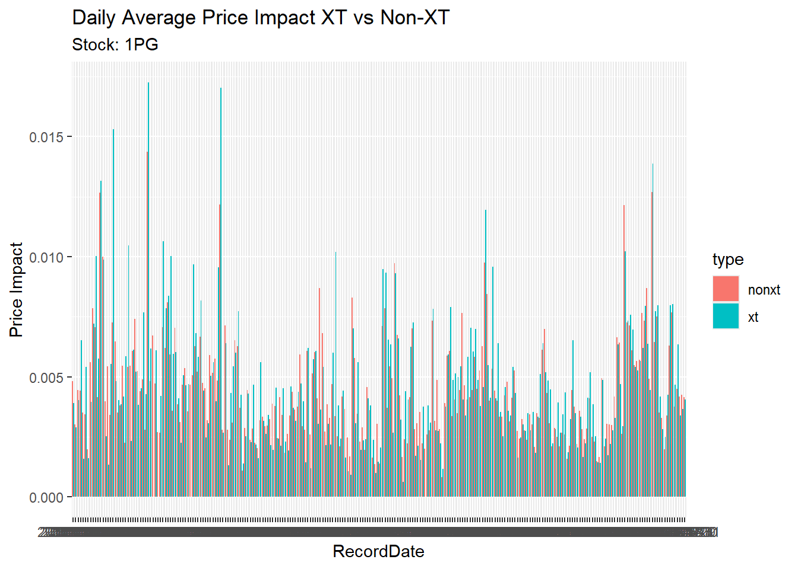

| Qualifiers | count |
|---|---|
| AC | 5275 |
| AC XT | 360 |
| Bi | 103527 |
| CX | 259 |
| CX Bi | 1669 |
| CX Si | 1825 |
| Si | 105222 |
| XT Bi | 4060 |
| XT Si | 4558 |
Research Project
1 Introduction
1.1 Australian Stock Exchange
ASX is an integrated exchange offering listings, trading, clearing, settlement, technical and information services, technology, data and other post-trade services.
It acts as a market operator, clearing house and payments system facilitator. It oversees compliance with its operating rules, promotes standards of corporate governance among Australia’s listed companies and helps to educate retail investors.
ASX operates markets for a wide range of asset classes including equities, fixed income, commodities and energy.
1.2 Data
Historical trade data in ASX from 2011 - 2015.
Initial: trade data of 1 stock in the year 2015.
1.3 Topics
Price Impact of Cross Trades
A cross trade occurs when both the buyer and seller sides of a trade are handled by the same broker.
Price impact refers to the effect that a trade, or a series of trades, has on the market price of a stock. It measures how much the price of a stock moves as a result of trading activity.
1.3.1 Hypothesis
Cross trades have a greater price impact than regular trades because they are more information-driven.
2 Data
1PG Trades Count (2015) by Qualifiers:
We do not care about Center Point trades, because they do not influence market price directly. Hence, take them out. We also do not need Auction trades. It leaves us with XT Bi, XT Si, Bi and Si Trades.
| Qualifiers | count |
|---|---|
| Bi | 103429 |
| Si | 105131 |
| XT Bi | 4059 |
| XT Si | 4552 |
3 Analysis
3.1 XT vs Non-XT

3.2 Price Impact
Price impact is measured using:
Absolute value of Natural logarithm of the ratio of the best bid-ask mid-quote 5 minutes after the Cross Trade, divided by the prevailing best bid-ask mid-quote at the time of the trade. \[ PI5 = |ln(MidQuote_5/MidQuote_0)|\]
3.2.1 XT vs All Non-XT
# A tibble: 4 × 2
Qualifiers PI5_mean
<chr> <dbl>
1 Bi 0.00476
2 Si 0.00465
3 XT Bi 0.00501
4 XT Si 0.00499
3.2.2 XT vs Matched Trades
3.3 Possible Topics
3.3.1 XT for cross-subsidization of funds (informed)
Characteristics:
- Done by HFT brokers
- XT happened more off the market (transfer the stocks after/before automated HFT)
- XT happened:
- After non-preferred funds (B) buying the stock from market. This could happened for transferring stock from non-preferred (B) to preferred funds (A).
- After A buying the stock from market. This could happened for transferring stock from A to B.
- For control we need:
- The XT volume should be similar to the buying volume before.
- Time of buying before the XT should be not far away from the XT
- Absolute price impact is greater(?)
3.3.2 XT for principal profit (informed)
Principal profit:
- move unwanted shares to clients
- take wanted shares from clients
Characteristics:
- Done by retail brokers
- XT happened more off the market
- XT happened:
- After brokers buying the stock from market. This could happened for moving unwanted stock to clients.
- After clients buying the stock from the market. This could happened for taking wanted stocks clients.
- Execution price similar than prevailing market price. In non-informed XT, usually premium/discount are exist, as buyer/seller wants to buy/sell desperately. Hence, if the premium/discount are non-existent, the other party may be given or have different information.
- Absolute price impact is greater(?)
3.3.3 Price Impacting XT (non-informed)
Characteristics:
- Done by institutional brokers (high capital)
- Happened on the market, hence impacting price
- buy/ask order time and volume are similar (predetermined)
- happened quite frequently in short period of time
- very aggressive (absorb the liquidity)
- price impact is greater(?)
3.3.4 XT for transaction fee (non-informed))
- Done by institutional and retail brokers
- On-the-market. XT happened with similar volume and time of orders
- Not as aggressive
- price impact is not greater than regular trades
3.4 XT Statistics
3.4.1 Price Improvement Statistics on January
| desc | count | percentage |
|---|---|---|
| price improvement | 4 | 1.56 |
| best bid/ask | 206 | 80.47 |
| outside | 46 | 17.97 |